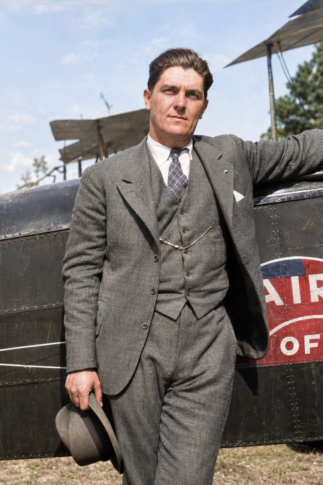

Lorica Council is recognised as Time Immemorial following the Order’s modern revival at Masonic Week.
2024
Lorica Lodge receives Time Immemorial status from the Grand Lodge.
2026
The Grand Commander grants a charter for Limerick Lodge in Kentucky.
The Story
A younger Order with an old symbolic language
The Masonic Order of Saint Patrick is not connected to The Most Illustrious
Order of Saint Patrick, established by King George III. However, it draws
inspiration from that Order’s ethos and from the life of Saint Patrick.
Revered as the Patron Saint of Ireland, Patrick is admired for his devoted
service to God and humanity.
In the early 20th century, a Masonic enlightenment movement began following
the establishment of the North Carolina Lodge of Research, No. 666, A. F.
& A. M., in Monroe, North Carolina, by John Raymond Shute II.
Widely known as the “Incomparable Innovator,” Sir Knight J. Ray Shute II
significantly revised and created numerous Masonic rituals and higher
degrees. Many of these degrees gained popularity and were incorporated into
national bodies within North American Freemasonry, continuing into the present day.
In 1930, the Knight York Cross of Honour was founded in Monroe, with the first
charter granted to Lily of the Valley Priory No. 1 in Charlotte. That same year,
the Convent General Knight of the York Cross of Honour was established, with
Brother Shute serving as Grand Master.
Brother Shute was granted the Degree of Thrice Illustrious Master in 1931 by
the Supreme Grand Royal Arch Chapter of Scotland. Alongside Companion J. Edward
Allen, he was designated by the Grand Council Royal and Select Masters in North
Carolina to create a ritual for the Thrice Illustrious Masters Degree. This
ritual was first performed on 6th May 1932 in Rocky Mount, North Carolina, and
subsequently adopted by the Grand Council.
On 16th April 1932, Brother Shute played a role in forming the Grand Council,
Allied Masonic Degrees of the USA, incorporated in North Carolina, serving as
its inaugural Sovereign Grand Master. The Grand Council oversaw several degrees,
including Royal Ark Mariner, Secret Monitor, Knight of Constantinople and others.
These milestones set the stage for the emergence of the Masonic Order of Saint
Patrick, underpinned by the research and contributions of Brother J. Ray Shute II.
Foundational memoryJohn Raymond Shute II, the “Incomparable Innovator” and founder of the Order. He was its first Grand Commander and first Grand Cross recipient.

PortraitSir Knight John Raymond Shute II
Identity & Eligibility
The Order and the Allied Masonic Degrees
The Masonic Order of Saint Patrick is a sovereign, distinct and invitational
Masonic Order. It is included by Charter within the Degree systems of the
Allied Masonic Degrees in France, India and Canada.
01
What the Order is
The Masonic Order of Saint Patrick is an invitational Masonic Order with its
own Grand Lodge, Grand Commander, officers, honours and warranted Lodges.
Its Irish Christian identity is expressed through Saint Patrick, the shamrock,
the cross, the lorica tradition and the motto Quis Separabit.
02
What it is not
It is separate from the Most Illustrious Order of Saint Patrick, the British
order of chivalry founded in 1783, but draws much of its inspiration from that
historic Order.
03
Relationship with the Allied Masonic Degrees
In certain jurisdictions, including the United States, France and Canada, the
Allied Masonic Degrees constitute a recognised qualification route because
they incorporate membership of the Red Branch of Eri. In England, membership
of the Royal Order of Eri, which encompasses membership of the Societas
Rosicruciana in Anglia, is likewise recognised as a valid qualification route.
04
Knight Masonry
Knight Masonry, a Masonic chivalric system governed by the Grand Council of
Knight Masons in Ireland and by the Grand Council of Knight Masons of the
United States of America, provides an alternative qualification route to
membership of the Red Branch of the Royal Order of Eri. In several Royal Arch
jurisdictions, a comparable form of Knight Masonry is designated the Red
Cross of Babylon.
Who May Be Invited
Admission is by invitation and by qualification
Candidates should be subscribing Master Masons in a regular and recognised
Craft Lodge, subscribing Royal Arch Masons in a regular and recognised
Chapter or equivalent body, and subscribing members of a recognised
Masonic chivalric body.
Regular Craft standingSubscribing membership in a regular and recognised Craft Lodge.
Royal Arch standingSubscribing membership in a regular and recognised Royal Arch Chapter or accepted equivalent.
Red Branch of Eri and/or Knight MasonryMembership in the Red Branch of Eri or the Royal Order of Eri is preferred. Knight Masonry membership (known as the Red Cross of Babylon in some jurisdictions) is also accepted.
Continuing membershipMembership in the qualifying bodies should be maintained after admission.
Education & Foreign Relations
The Order, the Allied Masonic Degrees and the path between them
A plain guide for inquiring brethren: what the Order is for, where it came
from, what is required to be considered, and how it stands in relation to the Allied Masonic
Degrees (AMD).
01
Purpose
The Order honours Freemasons for vision, leadership and service. Inspired by
Saint Patrick, Ireland's Patron Saint, it emphasises service, charity, Psalm 23
and moral courage. The shamrock represents the unity of the Triune God.
02
History
The Order grew from research by John Raymond Shute II, the “Incomparable
Innovator” of Monroe, North Carolina. In 1932, he became the first Sovereign
Grand Master of the Grand Council of the Allied Masonic Degrees of the USA. Sir
Knight David Lee Hargett, Jr. rediscovered Shute's ritual in 2005 and reactivated
the Order on 1 February 2006. It is separate from the British Order of Saint Patrick,
founded in 1783.
03
Requirements
Admission is by invitation. Required qualifications include Ancient Free and
Accepted Masonry (Craft), the Holy Royal Arch and Knight Masonry (called the Red
Cross of Babylon in some jurisdictions). Membership in the Red Branch of Eri under
the Allied Masonic Degrees or the Societas Rosicruciana in Anglia is preferred.
The original Shute System also sought Cryptic and Knight Templar membership,
preferably with prior service in office.
The Grand Council of the Allied Masonic Degrees of the USA is formed, with J. Ray Shute II as its first Grand Commander.
Sir Knight David Lee Hargett, Jr., the second Grand Commander, reactivates the Order on 1 February.
Sir Knight D. Allen Surratt succeeds as Grand Commander.
Charters to work the Degree are granted to the Allied Masonic Degrees of France (20 April) and India (9 December).
Sir Knight Paul W. Johnston is installed as 4th Grand Commander at the AMD USA event in Arlington, Virginia, on 10 February.
The Grand Lodge of Kansas A.F.&A.M formally recognises the Order of Saint Patrick.
Foreign Relations
International Standing of the Order
Since 2006, the Order has operated in its natural jurisdictions through
independent Lodges. From 2022 onwards, formal Charters have been issued,
conferring the authority to work the Order.
Allied Masonic Degrees of FranceOn 20 April 2022, the Grand Conseil des Grades Maconniques Allies en France received a charter to establish Lodges of the Order in its jurisdiction and admit qualified brethren.
Allied Masonic Degrees of IndiaOn 9 December 2022, the Grand Council of the Allied Masonic Degrees of India received a charter to establish Lodges of the Order in its jurisdiction and admit qualified brethren.
Allied Masonic Degrees of CanadaOn 10 August 2024, the Grand Council of the Allied Masonic Degrees of Canada received a charter to establish Lodges of the Order in its jurisdiction and admit qualified brethren.
The Grand Lodge of Kansas A.F.&A.M.In November 2026, MW Bro. David W. “Dave” Hendricks, Grand Master, formally recognised the Order of Saint Patrick. This allows Downpatrick Lodge to work the Order in Kansas.
The 2022 Charter. Granted by Grand Commander D. Allen Surratt to the Grand Conseil des Grades Maconniques Allies en France, 20 April 2022.
The Path to the Order
From the Craft Lodge to the Order of Saint Patrick
The Masonic Order of Saint Patrick is a distinct, invitational Order with its own
government, officers, Constitutions, Lodges and symbolic tradition. It is separate
from the Craft, the Royal Arch and the Allied Masonic Degrees, and has its own
membership pathway and qualifications.
The pathway begins with a subscribing Master Mason in a regular and recognised Craft
Lodge. The candidate must also be a Companion of the Holy Royal Arch, belonging to a
regular Chapter or an equivalent recognised body where the jurisdiction provides one.
The Order also requires a connection with a recognised Masonic chivalric or allied
body. Knight Masonry is required; in some jurisdictions this is known as the Red Cross
of Babylon. Membership in the Red Branch of Eri under an AMD or SRIA constitution is
preferred. AMD may provide a qualifying background, but it is not the Order itself.
AMD does not govern the Order, and the Order is not a degree of AMD. Their relationship
is one of qualification and shared Masonic tradition. A Brother from AMD or another
recognised body may be invited if he meets the remaining requirements.
The Order's Irish Christian and chivalric symbolism includes Saint Patrick, the
shamrock, the cross and the motto Quis Separabit, expressing unity, fidelity,
fraternal devotion and constancy. Membership is by invitation and carries a distinct
spiritual and symbolic identity.
A Brother may be considered for invitation when he:
Is a subscribing Master Mason in a regular and recognised Craft Lodge.
Is a subscribing Companion of a Royal Arch Chapter, or of an equivalent recognised body.
Is a Knight Mason (known as the Red Cross of Babylon in some jurisdictions) and, preferably, a member of the Red Branch of Eri under an AMD or SRIA constitution.
Maintains active membership and good Masonic standing in the bodies from which he comes.
Is invited and accepted by the competent officers; a petition alone does not secure admission.
In summary, a Brother begins in the Craft, continues in the Royal Arch and gains further
experience in a recognised allied or chivalric body. If he meets the qualifications and
is considered suitable, he may be invited to join the Masonic Order of Saint Patrick.
Meaning
Symbols of faith, service and fellowship
The seal and motto
The seal brings together the shamrock, cross, gold border and motto
Quis separabit. These symbols evoke protection, fidelity, Christian
heritage and unity among the brethren.
01
Lorica
In the Hiberno-Scottish Christian tradition, the lorica is a prayer for protection. Here it serves as an image of spiritual strength.
02
Chivalry
The Order’s titles and ceremonies present membership as a commitment to duty, fidelity and service.
03
Recognition
The charters emphasise vouched membership, mutual recognition and allegiance to the Grand Lodge and its successors.
04
Continuity
Time Immemorial status honours a Lodge’s history while recognising its place in the current jurisdiction.
Current Lodges
Lodges of the Order
Browse the current Lodge roll. You can update it in the Builder panel.
Administration
Grand Lodge officers and honours
The Charters
The Limerick Lodge Charter records a petition by qualified, vouched brethren and
grants authority under the Order's Constitutions to establish the Lodge in Kentucky.
The Lorica Charter recognises the former Council, grants Lodge status and records
the Lodge's Time Immemorial recognition.
Grand Officers
Grand Commanders
Knight Grand Cross
Archive
Archive
News
Order updates
Contact
Get in touch
Admission is by invitation. For enquiries about the Order or this website, use the
contact details below.
The Order
Grand Lodge contact details will appear here when available.
Webmaster
Ing. Dimitrios Skiadopoulos
Designs, operates and maintains this website.
Builder
Update the site content
Add news, Lodge records, officers and gallery items in your browser. Export the
data as JSON and save it with the website files so you can use it again later.